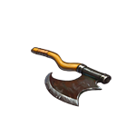
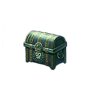
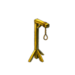
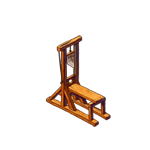
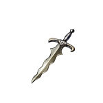

Получено: файл; исходный URL. Иллюстрация в отдельной статье ViveR_9 «Коллекция палача»; исходный файл без перекодирования. Авторство отдельно не установлено. Страница: источник.

Коллекция палача
Браузерная социальная версия; историческая статья; дата редакции неизвестна- Тип
- Коллекции
- Версия и дата
- Браузерная социальная версия; историческая статья; дата редакции неизвестна
Элементы коллекции















Данные по источнику · Браузерная социальная версия · историческая статья; дата редакции неизвестна
Предварительно: один материал, требуется сверка. Требуется сверка.
- Состав (источник Zombie-island)
- Топор; Сундук; Виселица; Гильотина; Роковой меч.
- Награда (источник Zombie-island)
- 1500 Опыт; 5 Дублон.
- Коллекцию палача можно найти в ценностях и сокровищах
- Зимний сюрприз; Шкатулка; Северный бриллиант; Северный изумруд; Мандариновый сюрприз; Дом привидений; Вишневый торт; Новогодняя елка; Цирковой шатер; Хэллоуинский маяк; Новогодняя елка за дубл; Новогодняя елка за зб.
- Коллекцию палача можно привезти с пиратских островов
- Пиратский сундук.
- Коллекция палача попадается при колдовании Палочками дома
- Палочка-выручалочка.
Данные по источнику · браузерная версия; платформа в ответе не уточнена · Дата на странице (формат не уточнён): 17/03/2015
Предварительно: Ответ справочного сайта; достоверность и независимость от других фанатских источников не установлены. Возможны различия редакций и версии.. Требуется сверка.
- Ответ источника
- Коллекция Палача Зомби Ферма должна быть собрана каждым игроком, который хочет получить 1500 баллов опыта и 5 дублонов. Есть несколько способов собрать эту редкую коллекцию: самому искать все 5 ее составляющих или попытать удачу и открыть некоторые ценности. В первом случае придется потрудиться и раздобыть роковой меч, топор, гильотину, сундук и виселицу. Во втором случае нужно попытаться открыть шкатулку и зимний сюрприз, из которых с высокой вероятностью может выпасть целая коллекция.
Данные по источнику · браузерная версия; платформа в ответе не уточнена · Дата на странице (формат не уточнён): 11/03/2015
Предварительно: Ответ справочного сайта; достоверность и независимость от других фанатских источников не установлены. Возможны различия редакций и версии.. Требуется сверка.
- Ответ источника
- В игре Зомби Ферма Палач – это название одной из коллекций, которая нужна каждому, кто хочет получить 1500 баллов опыта и 5 дублонов. В состав коллекции входят следующие предметы: сундук, роковой меч, виселица, топор и гильотина. За коллекцией Палача лучше отправиться на Пиратские острова, но иногда игроки получают ее из шкатулки с ценностями, в кладе Северный бриллиант, из Дома Привидений, Циркового шатра, и зимнего сюрприза. Коллекция нужна для прохождения задания «Клетки».
Данные по источнику · браузерная версия; платформа не указана · дата редакции не установлена
Предварительно: Содержимое списка: изображения и колонки могут терять смысл при извлечении текста; отдельная страница и дата не проверены. Подписи alt иногда ошибочны.. Требуется сверка.
- Текст карточки из каталога
- 1500 опыта и 5 дублонов Топор Сундук Виселица Гильотина Роковой меч Где хорошо копается Коллекция палача: На Пиратских островах
Данные по источнику · Браузерная версия ВКонтакте; редакция не установлена · 05.10.2018 — дата публикации; дата последующей редакции неизвестна
Предварительно: Фанатская статья: вероятность находки не указана; независимость от других справочников не установлена.. Требуется сверка.
- Состав
- Топор; Сундук; Виселица; Гильотина; Роковой меч.
- Обмен
- 5 дублонов и 1500 опыта.
- Получение
- Среди ценностей Хэллоуин 2018, Подарок три, Подарок четыре, Трофейный ящик, Открытый ларец, Мандариновый сюрприз, Шкатулка, Северный бриллиант и Северный изумруд.
- Палочками
- Октавий и Пончик-победитель.
- Применение
- Дедушкины сани, Карета, Санки Слона; указаны задания «В путь», «Санта», «День 15», «Клетки», «Марафон 36».
Связанные сущности
нет проверенных связей — требуется сверка.
Источники
- прочитано: Zombie-island.moy.su; проверка 2026-11-21
- FatalGame: прочитан отдельный ответ; дата на странице 17/03/2015
- FatalGame: прочитан отдельный ответ; дата на странице 11/03/2015
- ZOMBIA: прочитана карточка в списке
- Ссылка на отдельную страницу; отдельно не проверена
- ViveR_9: отдельная статья коллекции